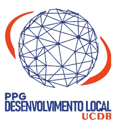
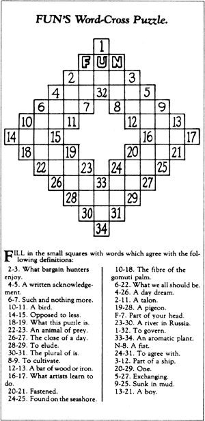
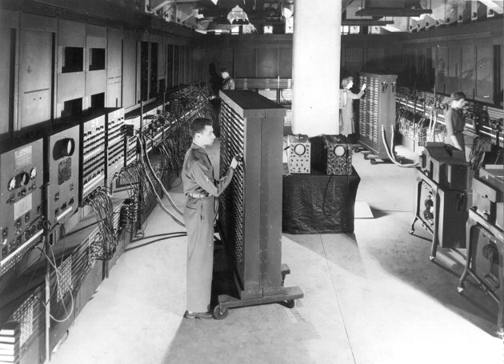

A obra
Erro e ilusão
Conhecimento pertinente
Condição humana
Identidade terrena
Cap. V
Enfrentar as incertezas
Enfrentar as incertezas
Compreensão
Ética do gênero humano

Universidade Católica Dom Bosco
Programa de Pós-Graduação Stricto Sensu em Desenvolvimento Local
Etna Marzolla Gutierres
Max Hiroito Tieti
Metodologia na perspectiva interdisciplinar e aprofundamento epistemológico
Prof.ª Maria Augusta de Castilhos
Campo Grande, MS · 2026
O progresso é certamente possível, mas é incerto (p. 80)
O futuro chama-se incerteza (p. 81)
A história não corre como um rio, avança por desvios (p. 81)
A dinâmica do desvio
microscópico
PC
IA
religiões
empirismo
marginal (se não for esmagada)
ambivalência: a evolução não é necessariamente “boa”
Um desvio que virou nova normalidade
Discurso
★ Ações exógenas / de fora
Perda de saberes tradicionais
Desenvolvimento para o local (exógeno), e não no local nem a partir dele
• Perda de saberes tradicionais, ligada ao que o Morin diz na p. 82
Parte 2 · Max Hiroito Tieti
O anseio por certeza
um anseio desvairado por clareza
diante do silêncio irracional do mundo
Albert Camus, O mito de Sísifo (1942) · trad. livre
O cisne negro
Por séculos, “todos os cisnes são brancos”. Até 1697, quando holandeses viram cisnes negros na Austrália.
Uma única observação pode invalidar uma afirmação geral derivada de milênios de avistamentos de milhões de cisnes brancos.
Nassim Taleb, A lógica do cisne negro (2007) · trad. livre
Raro · impacto extremo · previsível só depois
Onde mora a incerteza
O mundo
relação ao mesmo tempo antagônica, concorrente e complementar
Morin, p. 84
Conhecer
todo conhecimento é tradução
coerente não quer dizer verdadeiro
sem autocrítica, vira racionalização
não enxergamos nossa mente por inteiro
Incerteza cérebro-mental e lógica
Não vemos o mundo: vemos a tradução que o cérebro faz dele.
Nem a contradição é sinal de falsidade, nem a não-contradição é sinal de verdade.
Pascal, citado por Morin, p. 84
Incerteza racional e psicológica
aberta: aceita ser contestada
fechada: explica tudo e não aprende nada
nossa sinceridade não é garantia de certeza
Morin, p. 85
Somos natureza até quando raciocinamos
Por trás de toda lógica há exigências fisiológicas. Por exemplo: que o certo vale mais que o incerto.
Nietzsche, Além do bem e do mal §3 · trad. livre
A racionalidade “não dispõe de poder supremo”. Morin, p. 53
A incerteza do real
As ideias e teorias não refletem, mas traduzem a realidade.
adapta-se ao imediato
foge dos limites do real
vê “algo possível ainda invisível no real”
Morin, p. 85
Como saber, então?
Cada palavra se confirma pelas outras: convergência dos indícios.
Mas a vida não tem gabarito, e as piores ilusões estão “nas certezas doutrinárias, dogmáticas e intolerantes”.
Morin, p. 86

O conhecimento é a navegação em um oceano de incertezas, entre arquipélagos de certezas.
Morin, p. 86
Agir · ecologia da ação
Tão logo um indivíduo empreende uma ação […] esta começa a escapar de suas intenções.
Às vezes ela volta “como um bumerangue”. É preciso seguir, corrigir e, se preciso, torpedear a ação.
Morin, p. 86–87
Gödel · Arrow · von Neumann
é impossível apresentar um algoritmo de otimização para os problemas humanos
Morin, p. 87

Ecologia da ação
Morin, p. 88–89
Hirschman · consequências insuspeitas
o mal inesperado supera o bem esperado
“quanto mais se muda, mais tudo permanece igual”
perde-se liberdade ou segurança
“É tudo incerto”: complexidade ou desculpa para não agir?
Morin, p. 89
O longo prazo é imprevisível
nenhuma ação está segura de ocorrer no sentido de sua intenção
Morin, p. 89–90
Enfrentar · a virada
Não à inação, “mas ao desafio que reconhece seus riscos”.
Morin, p. 90
É preciso apostar. Não é opcional. Você está embarcado.
Pascal, Pensamentos §233 · trad. livre
Como enfrentar
sequência fixa, para ambiente estável
se o contexto muda, trava
cenário que se modifica com os acasos e as oportunidades
prudência e audácia
A estratégia deve prevalecer sobre o programa.
Morin, p. 90
Fins que brigam entre si
Liberdade demais destrói a igualdade. Igualdade imposta destrói a liberdade.
a fraternidade não pode ser nem decretada, nem imposta, mas incitada
Morin, p. 91
E a nossa pesquisa?
Fechamento
O desejo de liquidar a incerteza pode ser “uma enfermidade própria a nossas mentes”.
A renúncia ao melhor dos mundos não é, de maneira alguma, a renúncia a um mundo melhor.
Morin, p. 91–92
saibamos, então, esperar o inesperado e trabalhar pelo improvável.
Morin, p. 92
Etna Marzolla Gutierres · Max Hiroito Tieti
MORIN, E. Os sete saberes necessários à educação do futuro. 2. ed. São Paulo: Cortez; Brasília: UNESCO, 2000.